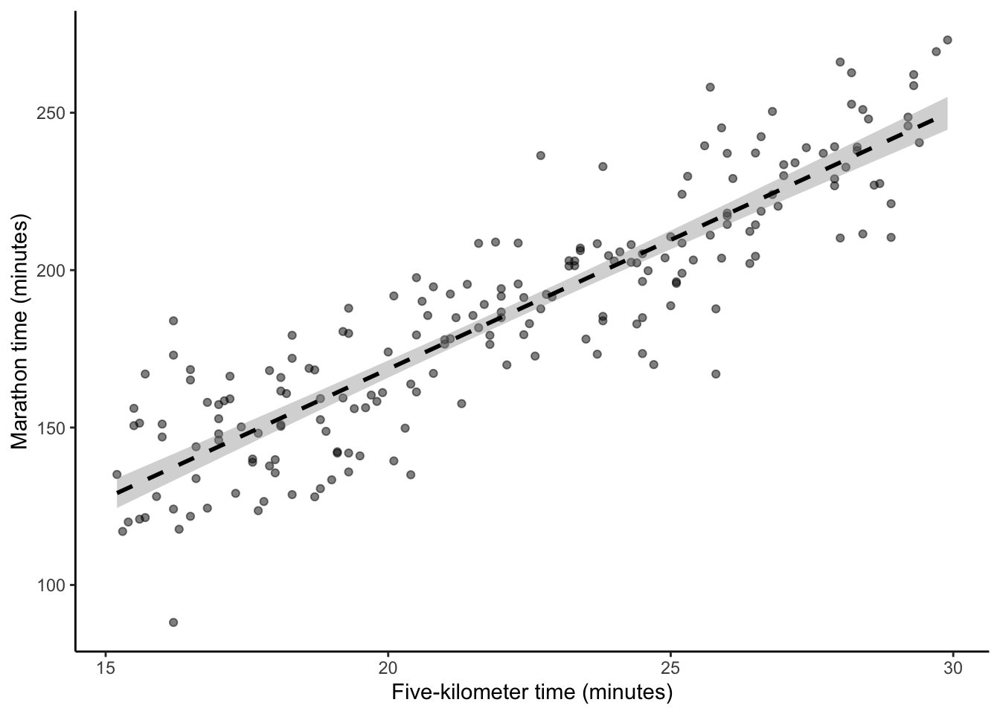
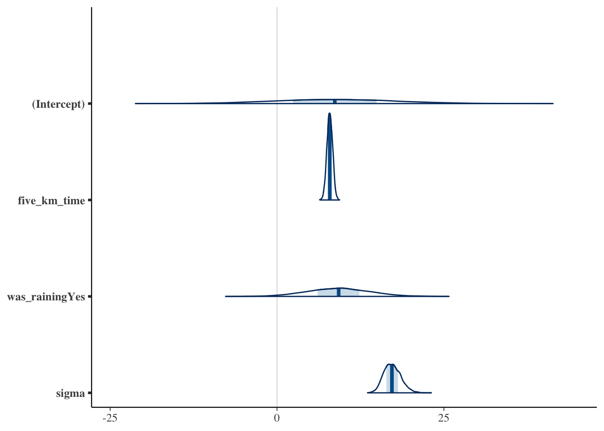

Read Regression and Other Stories, Chapters 6 “Background on regression modeling”, 7 “Linear regression with a single predictor”, and 10 “Linear regression with multiple predictors”, (Gelman, Hill, and Vehtari 2020)
A detailed guide to linear models.
Read An Introduction to Statistical Learning with Applications in R, Chapter 3 “Linear Regression”, (James et al. 2021)
A complementary treatment of linear models from a different perspective.
Read Why most published research findings are false, (Ioannidis 2005)
Specifies aspects that can undermine the conclusions drawn from statistical models.
Key concepts and skills
Linear models are a key component of statistical inference and enable us to quickly model a wide range of data. Simple and multiple linear regression model a continuous dependent variable as a function of one, and multiple, independent variables, respectively.
Linear models can be used for making predictions on new data without a known label (machine learning), or doing inference on the coefficients of the model. In this book, we will be concerned with one of two different aspects: prediction or inference. We will use machine learning approaches for the former, and Bayesian methods for the latter.
Linear models have been used in various forms for a long time. For instance, Stigler (1986, 16) describes how least squares, which is a method to fit simple linear regression, was associated with foundational problems in astronomy in the 1700s, such as determining the motion of the moon and reconciling the non-periodic motion of Jupiter and Saturn. The fundamental issue at the time with least squares was that of hesitancy by those coming from a statistical background to combine different observations. Astronomers were early to develop a comfort with doing this because they had typically gathered their observations themselves and knew that the conditions of the data gathering were similar, even though the value of the observation was different. For instance, Stigler (1986, 28) characterizes the polymath mathematician Euler as considering that errors increase as they are aggregated, in comparison to the astronomer Mayer, who was comfortable that errors would cancel each other. It took longer, again, for social scientists to become comfortable with linear models, possibly because they were hesitant to group together data they worried were not alike. In this one sense, astronomers had an advantage because they could compare their predictions with what happened whereas this was more difficult for social scientists (Stigler 1986, 163).
When we build models, we are not discovering “the truth”. A model is not, and cannot be, a true representation of reality. We are using the model to help us explore and understand our data. There is no one best model, there are just useful models that help us learn something about the data that we have and hence, hopefully, something about the world from which the data were generated. When we use models, we are trying to understand the world, but there are enormous constraints on the perspective we bring to this. Further, we should not just blindly throw data into a regression model and hope that it will sort it out—“Regression will not sort it out. Regression is indeed an oracle, but a cruel one. It speaks in riddles and delights in punishing us for asking bad questions” (McElreath 2020, 162).
We use models to understand the world. We poke, push, and test them. We build them and rejoice in their beauty, and then seek to understand their limits and ultimately destroy them. It is this process that is important, it is this process that allows us to better understand the world; not the outcome. When we build models, we need to keep in mind both the world of the model and the broader world that we want to be able to speak about. The datasets that we have are often unrepresentative of real-world populations. Models trained on such data are not worthless, but they are also not unimpeachable. To what extent does the model teach us about the data that we have? To what extent do the data that we have reflect the world about which we would like to draw conclusions? We need to keep such questions front of mind.
A lot of statistical methods still commonly used today were developed for situations such as astronomy and agriculture. People such as Fisher (1926) were able to randomize the order of fields and planting because they worked at agricultural stations. But many of the subsequent applications in the twentieth and twenty-first centuries do not have those properties. But statistical validity relies on the assumptions, and so while what is taught is correct, we rarely meet the starting criteria. Statistics is often taught as though it proceeds through some idealized process where a hypothesis appears, is tested against some data that similarly appears, and is either confirmed or not. But that is not what happens, in practice. We react to incentives. We dabble, guess, and test, and then follow our intuition, backfilling as we need. All of this is fine. But it is not a world in which a traditional null hypothesis, which we will get to later, holds completely. This means concepts such as p-values and power lose some of their meaning. While we need to understand these foundations, we also need to be sophisticated enough to know when we need to move away from them.
Manual statistical checks are widely used in modelling. And an extensive suite of them is available. But automated testing is also important. For instance, Knutson et al. (2022) built a model of excess deaths in a variety of countries, to estimate the overall death toll from the pandemic. After initially releasing the model, which had been extensively manually checked for statistical issues and reasonableness, some of the results were re-examined and it was found that the estimates for Germany and Sweden were over-sensitive. The authors acknowledged this, and addressed the issues, but the integration of automated testing of expected values for the coefficients, in addition to the usual manual statistical checks, would go some way to enabling us to have more faith in the models of others.
In this chapter we begin with simple linear regression, and then move to multiple linear regression, the difference being the number of explanatory variables that we allow. We go through three approaches for each of these: base R, in particular the lm() and glm() functions, which are useful when we want to quickly use the models in EDA; tidymodels(Kuhn and Wickham 2020) which is useful when we are interested in prediction; and rstanarm(Goodrich et al. 2020) for when we are interested in inference. In general, a model is either optimized for prediction or coefficient inference. Regardless of the approach we use, the important thing to remember that we are just doing something akin to fancy averaging, and our results always reflect the biases and idiosyncrasies of the dataset.
12.2 Simple linear regression
When we are interested in the relationship of some continuous variable, say \(y\), and some other variable, say \(x\), we can use simple linear regression. This is based on the Normal, also called “Gaussian”, distribution, but it is not these variables themselves that are normally distributed. The Normal distribution is determined by two parameters, the mean, \(\mu\), and the standard deviation, \(\sigma\)(Pitman 1993, 94):
\[y = \frac{1}{\sqrt{2\pi\sigma}}e^{-\frac{1}{2}z^2},\] where \(z = (x - \mu)/\sigma\) is the difference between \(x\) and the mean, scaled by the standard deviation. Altman and Bland (1995) provide a lovely overview of the Normal distribution.
As introduced in Appendix A, we use rnorm() to simulate data from the Normal distribution.
library(tidyverse)set.seed(853)normal_example <-tibble(draws =rnorm(n =20, mean =0, sd =1))normal_example |>pull(draws)
Here we specified 20 draws from a Normal distribution with mean of 0 and standard deviation of 1. When we deal with real data, we will not know these parameters and we want to use our data to estimate them. We can estimate the mean, \(\bar{x}\), and standard deviation, \(\hat{\sigma}_x\), with the following estimators:
If \(\hat{\sigma}_x\) is the estimate of the standard deviation, then the standard error of \(\bar{x}\) is: \[\mbox{SE}(\bar{x}) = \frac{\hat{\sigma}_{x}}{\sqrt{n}}.\] The standard error is a comment about the estimate of the mean compared with the actual mean, while the standard deviation is a comment about how widely distributed the data are. Given the small sample size in the example of 20, we strictly should use the finite-sample adjustment, but as this is not the focus of this book we will move forward with the general approach.
We can implement these in code using our simulated data to see how close our estimates are.
Table 12.1: Estimates of the mean and standard deviation based on the simulated data
Estimated mean
Estimated standard deviation
-0.21
0.88
We should not be too worried that our estimates are slightly off (Table 12.1), relative to the “true” mean and SD of 0 and 1. We only considered 20 observations. It will typically take a larger number of draws before we get the expected shape, and our estimated parameters get close to the actual parameters, but it will almost surely happen (Figure 12.1). Wasserman (2005, 76) considers our certainty of this, which is due to the Law of Large Numbers, as a crowning accomplishment of probability, although Wood (2015, 15), perhaps more prosaically, describes it as “almost” a statement “of the obvious”!
Figure 12.1: The Normal distribution takes its familiar shape as the number of draws increases
When we use simple linear regression, we assume that our relationship is characterized by the variables and the parameters. If we have two variables, \(Y\) and \(X\), then we could characterize a linear relationship between these as:
\[
Y = \beta_0 + \beta_1 X + \epsilon.
\tag{12.1}\]
Here, there are two coefficients, also referred to as parameters: the intercept, \(\beta_0\), and the slope, \(\beta_1\). In Equation 12.1 we are saying that the expected value of \(Y\) is \(\beta_0\) when \(X\) is 0, and that the expected value of \(Y\) will change by \(\beta_1\) units for every one unit change in \(X\). We may then take this relationship to the data that we have to estimate these coefficients. The \(\epsilon\) is noise and accounts for deviations away from this relationship. It is this noise that we generally assume to be normally distributed, and it is this that leads to \(Y \sim N(\beta, \sigma^2)\).
To make this example concrete, we revisit an example from Chapter 9 about the time it takes someone to run five kilometers, compared with the time it takes them to run a marathon (Figure 12.2 (a)). We specify a relationship of 8.4, as that is roughly the ratio between a five-kilometer run and the 42.2 kilometer distance of a marathon. To help the reader, we include the simulation code again here. Notice that it is the noise that is normally distributed, not the variables.
(b) With one ‘linear best-fit’ line illustrating the implied relationship

(c) Including standard errors
Figure 12.2: Simulated data of the relationship between the time to run five kilometers and a marathon
In this simulated example, we know the true values of \(\beta_0\) and \(\beta_1\), which are 0 and 8.4, respectively. But our challenge is to see if we can use only the data, and simple linear regression, to recover them. That is, can we use \(x\), which is the five-kilometer time, to produce estimates of \(y\), which is the marathon time, and that we denote by \(\hat{y}\) (by convention, hats are used to indicate that these are, or will be, estimated values) (James et al. 2021, 61):
\[\hat{y} = \hat{\beta}_0 + \hat{\beta}_1 x.\]
This involves estimating values for \(\beta_0\) and \(\beta_1\). But how should we estimate these coefficients? Even if we impose a linear relationship there are many options because many straight lines could be drawn. But some of those lines would fit the data better than others.
One way we may define a line as being “better” than another, is if it is as close as possible to each of the \(x\) and \(y\) combinations that we know. There are a lot of candidates for how we define as “close as possible”, but one is to minimize the residual sum of squares. To do this we produce estimates for \(\hat{y}\) based on some guesses of \(\hat{\beta}_0\) and \(\hat{\beta}_1\), given the \(x\). We then work out how wrong, for every observation \(i\), we were (James et al. 2021, 62): \[e_i = y_i - \hat{y}_i.\]
To compute the residual sum of squares (RSS), we sum the errors across all the points, taking the square to account for negative differences (James et al. 2021, 62): \[\mbox{RSS} = e^2_1+ e^2_2 +\dots + e^2_n.\] This results in one linear best-fit line (Figure 12.2 (b)), but it is worth reflecting on all the assumptions and decisions that it took to get us to this point.
Underpinning our use of simple linear regression is a belief that there is some “true” relationship between \(X\) and \(Y\). And that this is a linear function of \(X\). We do not, and cannot, know the “true” relationship between \(X\) and \(Y\). All we can do is use our sample to estimate it. But because our understanding depends on that sample, for every possible sample, we would get a slightly different relationship, as measured by the coefficients.
That \(\epsilon\) is a measure of our error—what does the model not know in the small, contained, world implied by this dataset? There is going to be plenty that the model does not know, but we hope the error does not depend on \(X\), and that the error is normally distributed.
We can conduct simple linear regression with lm() from base R. We specify the dependent variable first, then ~, followed by the independent variable. The dependent variable is the variable of interest, while the dependent variable is the basis on which we consider that variable. Finally, we specify the dataset. Before we run a regression, we may want to include a quick check of the class of the variables, and the number of observations, just to ensure that it corresponds with what we were expecting, although we may have done that earlier in the workflow. And after we run it, we may check that our estimate seems reasonable. For instance, (pretending that we had not ourselves imposed this in the simulation) based on our knowledge of the respective distances of a five-kilometer run and a marathon, we would expect \(\beta_1\) to be somewhere between 6 and 10.
# Check the class and number of observations are as expectedstopifnot(class(sim_run_data$marathon_time) =="numeric",class(sim_run_data$five_km_time) =="numeric",nrow(sim_run_data) ==200)sim_run_data_first_model <-lm( marathon_time ~ five_km_time,data = sim_run_data )stopifnot(between( sim_run_data_first_model$coefficients[2],6,10))
To see the result of the regression, we can use modelsummary() from modelsummary(Arel-Bundock 2021) (Table 12.2). We focus on those in the first column.
modelsummary::modelsummary(list("Five km only"= sim_run_data_first_model,"Five km only, centered"= sim_run_data_centered_model ),fmt =2,statistic ="conf.int")
Table 12.2: Explaining marathon times based on five-kilometer run times
Five km only
Five km only, centered
(Intercept)
4.47
185.73
[−8.85, 17.78]
[183.30, 188.16]
five_km_time
8.20
[7.61, 8.80]
centered_five_km_time
8.20
[7.61, 8.80]
Num.Obs.
200
200
R2
0.790
0.790
R2 Adj.
0.789
0.789
AIC
1714.7
1714.7
BIC
1724.6
1724.6
Log.Lik.
−854.341
−854.341
F
745.549
745.549
RMSE
17.34
17.34
The top half of the table provides our estimated coefficients and standard errors in brackets. And the second half provides some useful diagnostics, which we will not dwell too much on here. The intercept in the left column is the marathon time associated with a hypothetical five-kilometer time of 0 minutes. Hopefully this example illustrates the need to always interpret the intercept coefficient carefully. And to disregard it at times. For instance, in this circumstance, we know that the intercept should be zero, and it is just being set to around four because that is the best-fit given all the observations were for five-kilometer times between 15 and 30.
The intercept becomes more interpretable when we run the regression using centered five-kilometer times. That is, for each of the five-kilometer times we minus the mean five-kilometer time. In this case, the intercept is interpreted as the expected marathon time for someone who runs five kilometers in the average time. The results are contained in the second column of Table 12.2. Notice that the slope estimate is unchanged.
Following Gelman, Hill, and Vehtari (2020, 84) we recommend considering the coefficients as comparisons, rather than effects. And to use language that makes it clear these are comparisons, on average, based on one dataset. For instance, we may consider that the coefficient on the five-kilometer run time shows how different individuals compare. When comparing the marathon times of individuals in our dataset whose five-kilometer run time differed by one minute, on average we find their marathon times differs by about eight minutes. This makes sense seeing as a marathon is roughly that many times longer than a five-kilometer run.
We use augment() from broom(Robinson, Hayes, and Couch 2021) to add the fitted values and residuals to our original dataset. This allows us to plot the residuals (Figure 12.3).
(d) Comparing the estimated time with the actual time
Figure 12.3: Residuals from the simple linear regression with simulated data on the time someone takes to run five kilometers and a marathon
We want to try to speak to the “true” relationship, so we need to try to capture how much we think our understanding depends on the sample that we have to analyze. And this is where the standard error comes in. It tells us how sure we can be about the estimates of parameters based on the data that we have (Figure 12.2 (c)). Part of this is captured by the fact that standard errors are a function of sample size \(n\), and as the sample size increases, the standard errors decrease.
The most common way to summarize the range of uncertainty for a coefficient is to transform its standard error into a confidence interval. These intervals are often misunderstood to represent a statement of probability about a given realization of the coefficients (i.e. \(\hat\beta\)). In reality, confidence intervals are a statistic whose properties can only be understood “in expectation” (which is equivalent to repeating an experiment infinitely many times). A 95 per cent confidence interval is a range, such that there is “approximately a 95 per cent chance that the” range contains the population parameter, which is typically unknown (James et al. 2021, 66). This does not mean that when you generate a 95 per cent confidence interval, there is a 95 per cent chance the “true” coefficient lies within this range. Unlike Bayesian statistics, the frequentist paradigm is not able to make probabilistic claims about coefficients during inference.
When the coefficient follows a normal distribution, the lower and upper end of a 95 per cent confidence interval range will be about: \(\hat{\beta_1} \pm 2 \times \mbox{SE}\left(\hat{\beta_1}\right)\). For instance, in the case of the marathon time example, the lower end is \(8.2 - 2 \times 0.3 = 7.6\) and the upper end is \(8.2 + 2 \times 0.3 = 8.8\), and the true value (which we only know in this case because we simulated it) is 8.4.
We can use this machinery to test claims. For instance, we could claim that there is no relationship between \(X\) and \(Y\), i.e. \(\beta_1 = 0\), as an alternative to a claim that there is some relationship between \(X\) and \(Y\), i.e. \(\beta_1 \neq 0\). This is the null hypothesis testing approach mentioned above. In Chapter 8 we needed to decide how much evidence it would take to convince us that our tea taster could distinguish whether milk or tea had been added first. In the same way, here we need to decide if the estimate of \(\beta_1\), which we denote \(\hat{\beta}_1\), is far enough away from zero for us to be comfortable claiming that \(\beta_1 \neq 0\). If we were very confident in our estimate of \(\beta_1\) then it would not have to be far, but if we were not, then it would have to be substantial. For instance, if the confidence interval contains zero, then we lack evidence to suggest \(\beta_1 \neq 0\). The standard error of \(\hat{\beta}_1\) does an awful lot of work here in accounting for a variety of factors, only some of which it can actually account for, as does our choice as to what it would take to convince us.
We compare this standard error with \(\hat{\beta}_1\) to get the “test statistic” or t-statistic: \[t = \frac{\hat{\beta}_1}{\mbox{SE}(\hat{\beta}_1)}.\] And we then compare our t-statistic to the t-distribution to compute the probability of getting this absolute t-statistic or a larger one, if it was the case that \(\beta_1 = 0\). This probability is the p-value. A smaller p-value means there is a smaller “probability of observing something at least as extreme as the observed test statistic” (Gelman, Hill, and Vehtari 2020, 57). Note that we use the t-distribution rather than a normal one here because the ratio of a normal and chi-squared distribution can be shown to be slightly larger tails than a standard normal.
Words! Mere words! How terrible they were! How clear, and vivid, and cruel! One could not escape from them. And yet what a subtle magic there was in them! They seemed to be able to give a plastic form to formless things, and to have a music of their own as sweet as that of viol or of lute. Mere words! Was there anything so real as words?
We will not make much use of p-values in this book because they are a specific and subtle concept. They are difficult to understand and easy to abuse. Even though they are “little help” for “scientific inference” many disciplines are incorrectly fixated on them (Nelder 1999, 257). One issue is that they embody every assumption of the workflow, including everything that went into gathering and cleaning the data. While p-values have implications if all the assumptions were correct; when we consider the full data science workflow there are usually an awful lot of assumptions. And we do not get guidance from p-values about whether the assumptions are reasonable (Greenland et al. 2016, 339).
A p-value may reject a null hypothesis because the null hypothesis is false, but it may also be that some data were incorrectly gathered or prepared. We can only be sure that the p-value speaks to the hypothesis we are interested in testing, if all the other assumptions are correct. There is nothing inherently wrong about using p-values, but it is important to use them in sophisticated and thoughtful ways. Cox (2018) discusses what this requires.
One application where it is easy to see an inappropriate focus on p-values is in power analysis. Power, in a statistical sense, refers to probability of rejecting a null hypothesis that is false. As power relates to hypothesis testing, it also relates to sample size. There is often a worry that a study is “under-powered”, meaning there was not a large enough sample, but rarely a worry that, say, the data were inappropriately cleaned or imputed, even though we cannot distinguish between these based only on a p-value. As Meng (2018) and Bradley et al. (2021) demonstrate, a focus on power can blind us from our responsibility to ensure our data are high-quality.
Shoulders of giants
Dr Nancy Reid is University Professor in the Department of Statistical Sciences at the University of Toronto. After obtaining a PhD in Statistics from Stanford University in 1979, she took a position as a postdoctoral fellow at Imperial College London. She was then appointed as assistant professor at the University of British Columbia in 1980, and then moved to the University of Toronto in 1986, where she was promoted to full professor in 1988 and served as department chair between 1997 and 2002 (Staicu 2017). Her research focuses on obtaining accurate inference in small-sample regimes and developing inferential procedures for complex models featuring intractable likelihoods. Cox and Reid (1987) examines how re-parameterizing models can simplify inference, Varin, Reid, and Firth (2011) surveys methods for approximating intractable likelihoods, and Reid (2003) overviews inferential procedures in the small-sample regime. Dr Reid was awarded the 1992 COPSS Presidents’ Award, the Royal Statistical Society Guy Medal in Silver in 2016 and in Gold in 2022, and the COPSS Distinguished Achievement Award and Lectureship in 2022.
12.3 Multiple linear regression
To this point we have just considered one explanatory variable. But we will usually have more than one. One approach would be to run separate regressions for each explanatory variable. But compared with separate linear regressions for each, adding more explanatory variables allows for associations between the dependent variable and the independent variable of interest to be assessed while adjusting for other explanatory variables. Often the results will be quite different, especially when the explanatory variables are correlated with each other.
We may also like to consider explanatory variables that are not continuous. For instance: pregnant or not; day or night. When there are only two options then we can use a binary variable, which is considered either 0 or 1. If we have a column of character values that only has two values, such as: c("Myles", "Ruth", "Ruth", "Myles", "Myles", "Ruth"), then using this as an explanatory variable in the usual regression set up would mean that it is treated as a binary variable. If there are more than two levels, then we can use a combination of binary variables, where some baseline outcome gets integrated into the intercept.
As an example, we add whether it was raining to our simulated relationship between marathon and five-kilometer run times. We then specify that if it was raining, the individual is five minutes slower than they otherwise would have been.
# A tibble: 200 × 3
five_km_time marathon_time was_raining
<dbl> <dbl> <chr>
1 20.4 164. No
2 16.8 168 Yes
3 22.3 196. No
4 19.7 160. No
5 15.6 121. No
6 21.1 178. No
7 17 157. No
8 18.6 169. No
9 17.4 160. Yes
10 17.8 126. No
# … with 190 more rows
We can add additional explanatory variables to lm() with +. Again, we will include a variety of quick tests for class and the number of observations, and add another about missing values. We may not have any idea what the coefficient of rain should be, but if we did not expect it to make them faster, then we could also add a test of that with a wide interval of non-negative values.
Call:
lm(formula = marathon_time ~ five_km_time + was_raining, data = sim_run_data)
Residuals:
Min 1Q Median 3Q Max
-49.772 -11.236 0.484 11.352 46.028
Coefficients:
Estimate Std. Error t value Pr(>|t|)
(Intercept) 5.0452 6.8025 0.742 0.4592
five_km_time 8.1992 0.3009 27.247 <2e-16 ***
was_rainingYes 7.6368 3.1449 2.428 0.0161 *
---
Signif. codes: 0 '***' 0.001 '**' 0.01 '*' 0.05 '.' 0.1 ' ' 1
Residual standard error: 17.44 on 197 degrees of freedom
Multiple R-squared: 0.791, Adjusted R-squared: 0.7888
F-statistic: 372.7 on 2 and 197 DF, p-value: < 2.2e-16
The result, in the second column of Table 12.3, shows that when we compare individuals in our dataset who ran in the rain with those who did not, the ones in the rain tended to have a slower time. And this corresponds with what we expect if we look at a plot of the data (Figure 12.4 (a)).
We have included two types of tests here. The ones run before lm() check inputs, and the ones run after lm() check outputs. We may notice that some of the input checks are the same as earlier. One way to avoid having to re-write tests many times, would be to use testthat(Wickham 2011) to create a suite of tests of class in say an R file called “class_tests.R”, which are then called using test_file().
For instance, we could save the following as “test_class.R” in a dedicated tests folder.
We could save the following as “test_observations.R”
test_that("Check number of observations is correct", {expect_equal(nrow(sim_run_data), 200)})test_that("Check complete", {expect_true(all(complete.cases(sim_run_data)))})
And finally, we could save the following as “test_coefficient_estimates.R”.
It is important to be clear about what we are looking for in the checks of the coefficients. When we simulate data, we put in place reasonable guesses for what the data could look like, and it is similarly reasonable guesses that we test. A failing test is not necessarily a reason to go back and change the data or the model, but instead a reminder to look at what is going on in both, and potentially update the test if necessary.
In addition to wanting to include additional explanatory variables, we may think that they are related to each another. For instance, maybe rain really matters if it is also humid that day. We are interested in the humidity and temperature, but also how those two variables interact (Figure 12.4 (b)). We can do this by using * instead of + when we specify the model. When we interact variables in this way, then we almost always need to include the individual variables as well and lm() will do this by default. The result is contained in the third column of Table 12.3.
# A tibble: 200 × 5
five_km_time marathon_time was_raining humidity weather_conditions
<dbl> <dbl> <chr> <chr> <chr>
1 20.4 164. No Low No rain, not humid
2 16.8 168 Yes Low Rain, not humid
3 22.3 211. No High No rain, humid
4 19.7 175. No High No rain, humid
5 15.6 136. No High No rain, humid
6 21.1 178. No Low No rain, not humid
7 17 172. No High No rain, humid
8 18.6 184. No High No rain, humid
9 17.4 160. Yes Low Rain, not humid
10 17.8 126. No Low No rain, not humid
# … with 190 more rows
Table 12.3: Explaining marathon times based on five-kilometer run times and weather features
Five km only
Add rain
Add humidity
(Intercept)
4.47
5.05
23.54
[−8.85, 17.78]
[−8.37, 18.46]
[9.73, 37.35]
five_km_time
8.20
8.20
8.25
[7.61, 8.80]
[7.61, 8.79]
[7.66, 8.84]
was_rainingYes
7.64
3.94
[1.43, 13.84]
[−11.04, 18.92]
humidityLow
−21.14
[−27.35, −14.93]
was_rainingYes × humidityLow
5.10
[−11.37, 21.58]
Num.Obs.
200
200
200
R2
0.790
0.791
0.800
R2 Adj.
0.789
0.789
0.796
AIC
1714.7
1716.1
1716.2
BIC
1724.6
1729.3
1736.0
Log.Lik.
−854.341
−854.055
−852.113
F
745.549
372.701
195.296
RMSE
17.34
17.31
17.14
There are a variety of threats to the validity of linear regression estimates, and aspects to think about, particularly when using an unfamiliar dataset. We need to address these when we use it, and usually graphs and associated text are sufficient to assuage most of them. Aspects of concern include:
Linearity of explanatory variables. We are concerned with whether the independent variables enter in a linear way. We can usually be convinced there is enough linearity in our explanatory variables for our purposes by using graphs of the variables.
Independence of errors. We are concerned that the errors are not correlated with each other. For instance, if we are interested in weather-related measurement such as average daily temperature, then we may find a pattern because the temperature on one day is likely similar to the temperature on another. We can be convinced that we have satisfied this condition by making graphs of estimated compared with actual outcomes, such as Figure 12.3 (d), or graphs of the residuals compared with observed values, such as Figure 12.3 (c).
Homoscedasticity of errors. We are concerned that the errors are not becoming systematically larger or smaller throughout the sample. If that is happening, then we term it heteroscedasticity. Again, graphs of errors, such as Figure 12.3 (b), are used to convince us of this.
Outliers and other high-impact observations. Finally, we might be worried that our results are being driven by a handful of observations. For instance, thinking back to Chapter 5 and Anscombe’s Quartet, we notice that linear regression estimates would be heavily influenced by the inclusion of one or two particular points. We can become comfortable with this by considering our analysis on various sub-sets.
Those aspects are statistical concerns and relate to whether the model is working. The most important threat to validity and hence the aspect that must be addressed at some length, is whether or not this model is directly relevant to the research question of interest.
12.4 Two cultures
Breiman (2001) describes two cultures of statistical modelling: one focused on prediction and the other on inference. In general, around this time, various disciplines tended to focus on either inference or prediction. The rise of data science has meant there is now a need to be comfortable with both (Neufeld and Witten 2021). The two cultures are being brought closer together, and there is an overlap and interaction between prediction and inference. But their separate evolution means there are still considerable cultural differences.
In this book we use frequentist GLMs within tidymodels when we are interested in prediction. And when we are focused on inference, instead, we use the probabilistic programming language Stan to fit GLMs in a Bayesian framework, and interface with it using rstanarm(Goodrich et al. 2020). This is slightly simplistic—we could do prediction with Bayesian models, and we could use Stan within tidymodels. But, for the sake of simplicity and clarity, we keep these separated in this way for this book. It is important to be conversant in both ecosystems and cultures.
12.4.1 Prediction
When we are focused on prediction, we will often want to fit many models. One way to do this is to copy and paste code many times. This is okay, and it is the way that most people get started but it is prone to making errors that are hard to find. A better approach will:
scale more easily;
enable us to think carefully about over-fitting; and
add model evaluation.
The use of tidymodels(Kuhn and Wickham 2020) satisfies these criteria by providing a coherent grammar that allows us to easily fit a variety of models. Like the tidyverse, it is a package of packages.
By way of illustration, we want to estimate the following model for the simulated running data:
\[
\begin{aligned}
y_i | \mu_i &\sim \mbox{Normal}(\mu_i, \sigma) \\
\mu_i &= \beta_0 +\beta_1x_i
\end{aligned}
\] where \(y_i\) refers to the marathon time of some individual \(i\) and \(x_i\) refers to their five-kilometer time. Here we say that the marathon time of some individual \(i\) is normally distributed with a mean of \(\mu\) and a standard deviation of \(\sigma\), where the mean depends on two parameters \(\beta_0\) and \(\beta_1\) and their five-kilometer time. Here “~” means “is distributed as”. We use this slightly different notation from earlier to be more explicit about the distributions being used, but this model is equivalent to \(y_i=\beta_0+\beta_1 x_i + \epsilon_i\), where \(\epsilon\) is normally distributed.
As we are focused on prediction, we are worried about over-fitting our data, which would limit our ability to make claims about other datasets. One way to partially address this is to split our dataset in two using initial_split().
We have placed 80 per cent of our dataset into the training dataset. We will use that to estimate the parameters of our model. We have kept the remaining 20 per cent of it back, and we will use that to evaluate our model. Why might we do this? Our concern is the bias-variance trade-off, which haunts all aspects of modelling. We are concerned that our results may be too particular to the dataset that we have, such that they are not applicable to other datasets. To take an extreme example, consider a dataset with ten observations. We could come up with a model that perfectly hits those observations. But when we took that model to other datasets, even those generated by the same underlying process, it would not be accurate.
One way to deal with this concern is to split the data in this way. We use the training data to inform our estimates of the coefficients, and then using the test data, to evaluate the model. A model that too closely matched the data in the training data would not do well in the test data, because it would be too specific to the training data. The use of this test-training split enables us the opportunity to build an appropriate model.
It is more difficult to do this separation appropriately than one might initially think. We want to avoid the situation where aspects of the test dataset are present in the training dataset because this inappropriately telegraphs what is about to happen. This is called data leakage. But if we consider data cleaning and preparation, which likely involves the entire dataset, it may be that some features of each are influencing each other. Kapoor and Narayanan (2022) find extensive data leakage in applications of machine learning that could invalidate much research.
Shoulders of giants
Dr Daniela Witten is the Dorothy Gilford Endowed Chair of Mathematical Statistics and Professor of Statistics & Biostatistics at the University of Washington. After taking a PhD in Statistics from Stanford University in 2010, she joined the University of Washington as an assistant professor. She was promoted to full professor in 2018. One active area of her research is double-dipping which is focused on the effect of sample splitting (Gao, Bien, and Witten 2022). She is an author of the influential James et al. (2021). Witten was appointed a Fellow of the American Statistical Association in 2020 and awarded the COPSS Presidents’ Award in 2022.
To use tidymodels we first specify that we are interested in linear regression with linear_reg(). We then specify the type of linear regression, in this case multiple linear regression, with set_engine(). Finally, we specify the model with fit(). While this is considerable more infrastructure than the base R approach detailed above, it advantage of this approach is that it can be used to fit many models.
The estimated coefficients are summarized in the first column of Table 12.4. For instance, we find that on average in our dataset, five-kilometer run times that are one minute longer are associated with marathon times that are about 8 minutes longer.
12.4.2 Inference with Bayesian methods
Running a regression in a Bayesian setting is similar to frequentist (i.e. lm(), glm(), etc). The main difference from a regression point of view, is that the parameters involved in the models (i.e. \(\beta_0\), \(\beta_1\), etc) are considered random variables, and so themselves have associated probability distributions. In contrast, the frequentistic paradigm assumes that that any randomness from these coefficients comes from a parametric assumption on the distribution of the error term (\(\epsilon\)).
Before we run a regression in a Bayesian framework, we need to decide on a starting probability distribution for each of these parameters, which we call a “prior”. While the presence of priors adds some additional complication, it has several advantages, and we will discuss the issue of priors in more detail below. This is another reason for the workflow advocated in this book: the simulation stage leads directly to priors. We will again specify the model that we are interested in, but this time we include priors.
We then combine information from the data with the priors to obtain posterior distributions for our parameters. Inference is then carried out based on analyzing posterior distributions.
Another aspect that is different between Bayesian approaches and the way we have been doing modelling to this point, is that Bayesian models will usually take longer to run. Because of this, it can be useful to run the model, either within the Quarto document or in a separate R script, and then save it with saveRDS(). With sensible Quarto chunk options for “eval” and “echo” (see Chapter 3), the model can then be read into the Quarto document with readRDS() rather than being run every time the paper is compiled. In this way, the model delay is only imposed once for a given model. It can also be useful to add beep() from beepr(Bååth 2018) to the end of the model, to get an audio notification when the model is done.
We use stan_glm() with the “gaussian()” family to specify multiple linear regression and the model formula is written in the same way as base R and tidymodels. We have explicitly added the default priors, although strictly this is not necessary.
The estimation results, which are in the second column of Table 12.4, are not quite what we expect. For instance, the rate of increase in marathon times is estimated to be around three minutes per minute of increase in five-kilometer time, which seems low given the ratio of a five-kilometer run to marathon distance.
The issue of picking priors is a challenging one and the subject of extensive research. For the purposes of this book, using the rstanarm defaults is fine. But even if they are just the default, priors should be explicitly specified in the model and included in the function. This is to make it clear to others what has been done. We could use default_prior_intercept() and default_prior_coef() to find the default priors in rstanarm and then explicitly include them in the model.
It is normal to find it difficult to know what prior to specify. Getting started by adapting someone else’s rstanarm code is perfectly fine. If they have not specified their priors, then we can use the helper function prior_summary(), to find out which priors were used.
prior_summary(sim_run_data_first_model_rstanarm)
Priors for model 'sim_run_data_first_model_rstanarm'
------
Intercept (after predictors centered)
~ normal(location = 0, scale = 2.5)
Coefficients
~ normal(location = [0,0], scale = [2.5,2.5])
Auxiliary (sigma)
~ exponential(rate = 1)
------
See help('prior_summary.stanreg') for more details
We are interested in understanding what the priors imply before we involve any data. We do this by implementing prior predictive checks. This means simulating from the priors to look at what the model implies about the possible magnitude and direction of the relationships between the explanatory and outcome variables. This process is no different to all the other simulation that we have done to this point.
number_draws <-1000priors <-tibble(sigma =rep(rexp(n = number_draws, rate =1), times =16),beta_0 =rep(rnorm(n = number_draws, mean =0, sd =2.5), times =16),beta_1 =rep(rnorm(n = number_draws, mean =0, sd =2.5), times =16),five_km_time =rep(15:30, each = number_draws),mu = beta_0 + beta_1 * five_km_time ) |>rowwise() |>mutate(marathon_time =rnorm(n =1, mean = mu, sd = sigma) )
Figure 12.5: Some implications from the priors that were used
Figure 12.5 suggests our model has been poorly constructed. Not only are there world record marathon times, but there are also negative marathon times! One issue is that our prior for \(\beta_1\) does not take in all the information that we know. We know that a marathon is about eight times longer than a five-kilometer run and so we could center the prior for \(\beta_1\) around that. Our re-specified model is:
\[
\begin{aligned}
y_i|\mu_i, \sigma &\sim \mbox{Normal}(\mu_i, \sigma) \\
\mu_i &= \beta_0 +\beta_1x_i\\
\beta_0 &\sim \mbox{Normal}(0, 2.5) \\
\beta_1 &\sim \mbox{Normal}(8, 2.5) \\
\sigma &\sim \mbox{Exponential}(1) \\
\end{aligned}
\] And we can see from prior prediction checks that it seems more reasonable (Figure 12.6).
number_draws <-1000updated_priors <-tibble(sigma =rep(rexp(n = number_draws, rate =1), times =16),beta_0 =rep(rnorm(n = number_draws, mean =0, sd =2.5), times =16),beta_1 =rep(rnorm(n = number_draws, mean =8, sd =2.5), times =16),five_km_time =rep(15:30, each = number_draws),mu = beta_0 + beta_1 * five_km_time ) |>rowwise() |>mutate(marathon_time =rnorm(n =1, mean = mu, sd = sigma) )
Additionally, rstanarm can help to improve the specified priors, by scaling them based on the data. Specify the prior that you think is reasonable and include it in the function, but also include “autoscale = TRUE”, and rstanarm will adjust the scale. When we re-run our model with these updated priors and allowing auto-scaling we get much better results, which are in the third column of Table 12.4.
Having built a Bayesian model, we may want to look at what it implies (Figure 12.7). One way to do this is to consider the posterior distribution.
One way to use the posterior distribution is to consider whether the model is doing a good job of fitting the data. The idea is that if the model is doing a good job of fitting the data, then the posterior should be able to be used to simulate data that are like the actual data (Gelman et al. 2020). We can implement a posterior predictive check with pp_check() (Figure 12.7 (a)). This compares the actual outcome variable with simulations from the posterior distribution. And we can compare the posterior with the prior with posterior_vs_prior() to see how much the estimates change once data are taken into account (Figure 12.7 (b)). Helpfully, pp_check() and posterior_vs_prior() return ggplot objects so we can modify the look of them in the normal way we manipulate graphs. These checks and discussion would typically just be briefly mentioned in the main content of a paper, with all the detail and graphs added to a dedicated appendix.
Figure 12.7: Examining how the model fits, and is affected by, the data
With a simple model like this, the differences between the predict and inference approaches are minimal. But as model or data complexity increases these differences can become important.
We have already discussed confidence intervals and the Bayesian equivalent to a confidence interval is called a “credibility interval”, and reflects two points such there is a certain probability mass between them, in this case 95 per cent. Table 12.4 shows confidence intervals for tidymodels and credible intervals for rstanarm, beneath the estimates. Bayesian estimation provides a distribution for each coefficient. This means there are actually an infinite number of points that we could use to generate this interval. We will include credible interval points in tables, because this is commonly needed, but it is important that the entire distribution is shown graphically. This might be using a cross-referenced appendix.
plot( sim_run_data_second_model_rstanarm,"areas")

The final aspect that we would like to check is a practical matter. rstanarm uses a sampling algorithm called “Markov chain Monte Carlo” (MCMC) to obtain samples from the posterior distributions of interest. We need to quickly check for signs that the algorithm ran into issues. In particular, we consider a trace plot, such as Figure 12.8 (a), and an Rhat plot, such as Figure 12.8 (b). These would typically go in a cross-referenced appendix.
Figure 12.8: Checking the convergence of the MCMC algorithm
In the trace plot, we are looking for lines that appear to bounce around, but are horizontal, and have a nice overlap between the chains. The trace plot in Figure 12.8 (a) does not suggest anything out of the ordinary. Similarly, with the Rhat plot, we are looking for everything to be close to 1, and certainly no more than 1.1. Again Figure 12.8 (b) is an example that does not suggest any problems. If these diagnostics do not seem similar to this, then simplify the model and re-run it.
12.5 Exercises
Scales
(Plan) Consider the following scenario: A person is interested in the heights of all the buildings in London. They walk around the city counting the number of floors for each building. Please sketch out what that dataset could look like and then sketch a graph that you could build to show all observations.
(Simulate) Please further consider the scenario described and simulate the situation, along with three independent variables that are associated the count of the number of levels. Please include at least ten tests based on the simulated data.
(Acquire) Please describe one possible source of such a dataset.
(Explore) Please use ggplot2 to build the graph that you sketched.
(Communicate) Please write two paragraphs about what you did.
Questions
Please simulate the situation in which there are two independent variables, “race” and “gender”, and one dependent variable, “vote_preference”, which is imperfectly related to them.
Please write a linear relationship between some response variable, Y, and some predictor, X. What is the intercept term? What is the slope term? What would adding a hat to these indicate?
What is the least squares criterion? Similarly, what is RSS and what are we trying to do when we run least squares regression?
What is statistical bias?
If there were three variables: Snow, Temperature, and Wind, please write R code that would fit a simple linear regression to explain Snow as a function of Temperature and Wind. What do you think would be the effect of adding another explanatory variable - daily stock market returns - to your model?
According to Greenland et al. (2016), p-values test (pick one):
All the assumptions about how the data were generated (the entire model), not just the targeted hypothesis it is supposed to test (such as a null hypothesis).
Whether the hypothesis targeted for testing is true or not.
A dichotomy whereby results can be declared “statistically significant”.
According to Greenland et al. (2016), a p-value may be small because (select all):
The targeted hypothesis is false.
The study protocols were violated.
It was selected for presentation based on its small size.
According to Obermeyer et al. (2019), why does racial bias occur in an algorithm used to guide health decisions in the US (pick one)?
The algorithm uses health costs as a proxy for health needs.
The algorithm was trained on Reddit data.
Please explain what a p-value is, using only the term itself (i.e. “p-value”) and words that are amongst the 1,000 most common in the English language according to the XKCD Simple Writer. (Please write one or two paragraphs.)
What is power (in a statistical context)?
According to McElreath (2020, 162) “Regression will not sort it out. Regression is indeed an oracle, but a cruel one. It speaks in riddles and delights in punishing us for…” (please select one answer)?
overcomplicating models.
asking bad questions.
using bad data.
Is a model that fits the small or large world more important to you, and why?
Tutorial
Allow that the true data generating process is the Normal distribution with mean of one, and standard deviation of 1. We obtain a sample of 1,000 observations using some instrument. Simulate the following situation:
Unknown to us, the instrument has a mistake in it, which means that it has a maximum memory of 900 observations, and begins over-writing at that point, so the final 100 observations are actually a repeat of the first 100.
We employ a research assistant to clean and prepare the dataset. During the process of doing this, unknown to us, they accidentally change half of the negative draws to be positive.
They additionally, accidentally, change the decimal place on any value between 1 and 1.1, so that, for instance 1 becomes 0.1, and 1.1 would become 0.11.
You finally get the cleaned dataset and are interested in understanding whether the mean of the true data generating process is greater than 0.
Discuss your analysis of the data, and the effect the issues have had, and finally some steps you can put in place to ensure actual analysis has a chance to flag some of these issues.
Arel-Bundock, Vincent. 2021. modelsummary: Summary Tables and Plots for Statistical Models and Data: Beautiful, Customizable, and Publication-Ready. https://CRAN.R-project.org/package=modelsummary.
Cox, David, and Nancy Reid. 1987. “Parameter Orthogonality and Approximate Conditional Inference.”Journal of the Royal Statistical Society: Series B (Methodological) 49 (1): 1–18. https://doi.org/10.1111/j.2517-6161.1987.tb01422.x.
Gao, Lucy, Jacob Bien, and Daniela Witten. 2022. “Selective Inference for Hierarchical Clustering.”Journal of the American Statistical Association, October, 1–11. https://doi.org/10.1080/01621459.2022.2116331.
Gelman, Andrew, Aki Vehtari, Daniel Simpson, Charles Margossian, Bob Carpenter, Yuling Yao, Lauren Kennedy, Jonah Gabry, Paul-Christian Bürkner, and Martin Modrák. 2020. “Bayesian Workflow.” arXiv. https://doi.org/10.48550/arXiv.2011.01808.
Goodrich, Ben, Jonah Gabry, Imad Ali, and Sam Brilleman. 2020. “rstanarm: Bayesian applied regression modeling via Stan.”https://mc-stan.org/rstanarm.
Greenland, Sander, Stephen Senn, Kenneth Rothman, John Carlin, Charles Poole, Steven Goodman, and Douglas Altman. 2016. “Statistical tests, P values, confidence intervals, and power: a guide to misinterpretations.”European Journal of Epidemiology 31 (4): 337–50. https://doi.org/10.1007/s10654-016-0149-3.
James, Gareth, Daniela Witten, Trevor Hastie, and Robert Tibshirani. 2021. An Introduction to Statistical Learning with Applications in R. 2nd ed. Springer. https://www.statlearning.com.
Kuhn, Max, and Hadley Wickham. 2020. Tidymodels: A Collection of Packages for Modeling and Machine Learning Using Tidyverse Principles. https://www.tidymodels.org.
McElreath, Richard. 2020. Statistical Rethinking: A Bayesian Course with Examples in R and Stan. 2nd ed. Chapman; Hall/CRC.
Meng, Xiao-Li. 2018. “Statistical Paradises and Paradoxes in Big Data (i): Law of Large Populations, Big Data Paradox, and the 2016 US Presidential Election.”The Annals of Applied Statistics 12 (2): 685–726. https://doi.org/10.1214/18-AOAS1161SF.
Nelder, John. 1999. “From Statistics to Statistical Science.”Journal of the Royal Statistical Society: Series D (The Statistician) 48 (2): 257–69. https://doi.org/10.1111/1467-9884.00187.
Neufeld, Anna, and Daniela Witten. 2021. “Discussion of Breiman’s "Two Cultures": From Two Cultures to One.”Observational Studies 7 (1): 171–74. https://doi.org/10.1353/obs.2021.0004.
Obermeyer, Ziad, Brian Powers, Christine Vogeli, and Sendhil Mullainathan. 2019. “Dissecting Racial Bias in an Algorithm Used to Manage the Health of Populations.”Science 366 (6464): 447–53. https://doi.org/10.1126/science.aax234.
R Core Team. 2022. R: A Language and Environment for Statistical Computing. Vienna, Austria: R Foundation for Statistical Computing. https://www.R-project.org/.